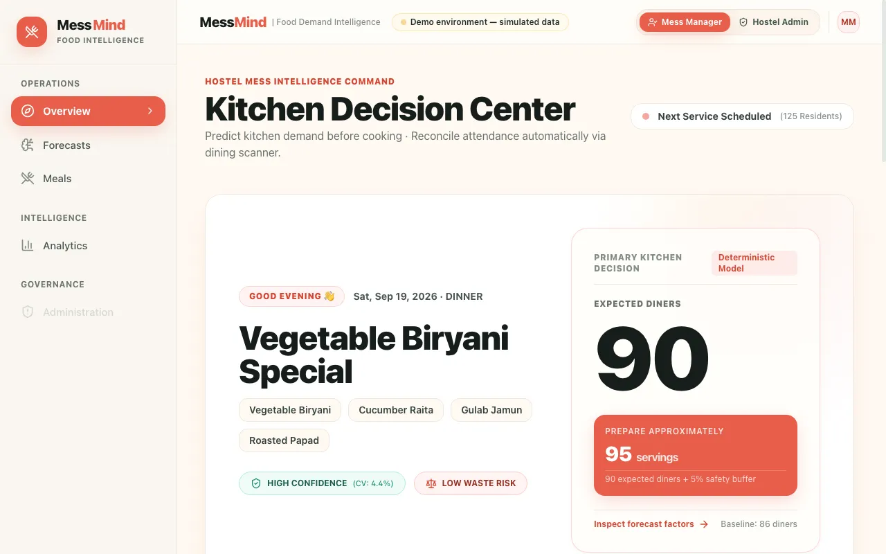

MessMind
Hostel Food Demand Intelligence
Originally developed for the WeMakeDevs AWS Hackathon, MessMind is a demand-intelligence platform designed to help hostel kitchen teams forecast meal attendance and make informed food-preparation decisions hours before service begins.
The platform models an operational closed-loop lifecycle: Predict → Prepare → Observe → Reconcile → Learn. Using a deterministic forecasting algorithm that synthesizes historical attendance records and resident opt-in signals, it calculates expected diners and recommended cooking quantities with a configurable safety buffer. Post-meal entrance scanner check-ins provide authoritative attendance records to reconcile forecasts against reality, while discarded food waste is tracked as an independent kitchen audit metric rather than inferred from resident absence.
Architecture & Demonstration Note: The full-stack repository architecture was designed and build-verified locally for the hackathon using Next.js 15, TypeScript, Tailwind CSS, Prisma, and PostgreSQL, with an optional Amazon Bedrock explanation layer. There is no live cloud database or backend deployment; for the public demonstration on GitHub Pages, the application was adapted into a self-contained static build that operates entirely in the browser using synthetic historical benchmark data and deterministic explanation logic.